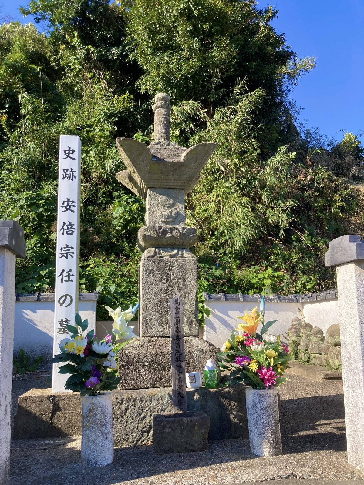

◂ 導入のページへ ── 家の言い伝えは、どこまで信じてよいのか
補注
松浦家の由緒を辿るとき、必ず行き当たる一つの説がある。前九年の役に敗れた安倍宗任の子孫が、肥前松浦に移って松浦黨を成したという伝えである。この説は古く、江戸中期に正面から否定され、そして今日、この説を書く系図の写本を、本文まで読むことができる。この補注は、説を証明するための文書ではない。かといって、葬るための文書でもない。確かめられたことと、確かめられなかったこととを同じ重さで記し、肯定しうる可能性は肯定しうるものとして公正に語り、そのうえで当家の見立てを、見立てと断って述べる。都合の悪い検証の結果も、隠さない。
宗任の子孫が松浦を称したという伝えは、剱巻に見える。当家に伝わる版本──『太平記』の版本に付載された剱巻である──で、その箇所を確かめた。天喜五年、源頼義が陸奥守となって「奥州住人 栗屋河次郎 安部ノ貞任、鳥海三郎 同宗任 兄弟謀叛ノ由」の討手に下り、九箇年戦って貞任の頸を取り宗任を虜にして上洛する。都で梅の花を見せられ、東の夷が何を知ろうかと笑おうとした公卿たちに、宗任は歌を返した。その一段に続けて、こう記す。
サテ宗任ハ筑紫ヘ被流タリケルガ、子孫繁昌ノ今ニアリ。松浦黨ハ是ナリ。
これだけである。同趣の記述は『前太平記』『歴代鎮西要略』にも伝わる。
この説を紹介するとき、剱巻に拠って「治暦三年（一〇六七）に大宰府へ流され」と限定するのが通例である。しかし当家の版本の剱巻に、治暦三年も大宰府も無い。年として記されるのは天喜五年、頼義が討手に下った年だけであり、配流先は「筑紫」とのみある。それもそのはずで、この年紀と配所の出所は、剱巻の系統ではなかった。公家の編年記録『百練抄』康平七年（一〇六四）三月廿九日条が、本文に「宗任・家任は伊豫に遣し、良照は太宰府に遣す」と記し、その自注に「治暦三年、宗任等を太宰府に移し遣す。本國に逃げ歸らんと欲するの聞え有るに依りてなり」と記している。宗任はまず伊予へ流され、三年ののち、本国へ逃げ帰るおそれありとして大宰府へ移された──年紀も配所も、理由まで添えて、公家記録の内にある。伊予への配置は、同じ日付の太政官符（『朝野群載』巻十一）でも確かめられる。公家記録の外にあるのは、そこから先──松浦への定着──だけである。
ここで一つ、旧版の誤りを断っておかねばならない。『百練抄』については「宗任の事はなし」とする紹介も流布しており、吉田東伍『大日本地名辞書』がそう書き、『日本地名大辞典』は「蓋し附会の説ならん」とまで書いた。当家もこの補注の旧版まで、両辞典に従っていた。国史大系本の版面を確かめて、改める。宗任の名は、本文にも自注にもある。ただし東伍が誤ったと言い切ることもできない。自注の主語は伝本によって「宗任等」と「家任等」とに割れており、東伍の拠った本が後者の系統だった可能性が残る。江戸の青柳種信は、上文に宗任・家任と並ぶのだから宗任を略したものだろうと処理したが、これは合理的な推論であって確定ではない。治暦三年の大宰府移送は、この自注の一本の読みに依っている。
いま一つ、この版本は宗任を「鳥海三郎」と呼ぶ。のちに触れる松浦の地誌が「鳥海三郎大夫 安部宗任」と記すのと合う。三郎大夫という称は、もともと宗任その人のものであった。
さらに詳しい形では、宗任の三男・季任が肥前松浦に赴き、松浦氏の娘婿となって松浦三郎大夫実任と称した、と語られる。血の入り方を婚姻に求めるこの伝えは、後に触れるとおり、右の諸書が語る筋とは性格を異にする。
この季任・実任という縁組の伝えには、典拠が付されていない。剱巻・前太平記・歴代鎮西要略が語るのは配流と「子孫 松浦氏を稱す」までであって、婚姻の一段はそこから独立している。この名は、いま国立国会図書館デジタルコレクションで全文を検めうる範囲──おおむね戦前までの刊行物──に、一度も現れない。吉田東伍にも、上松浦の郷土史料を集めた『松浦叢書』第一巻・第二巻にも、『北肥戦誌』にもない。太田亮『姓氏家系大辞典』の松浦氏の条は、松浦と安倍を繋ぐ説として剱巻・大島の伝え・『松図記』・『筑後地鑑』を挙げながら、実任の名を一度も書かない。そして、初出と見られるものは戦後にあった。安川浄生『安倍宗任──伝説と史実との接点を求めて』（昭和五十八年）が、「私の説である宗任の三男季任」と、著者みずから自説と断って書いている。すなわち三男季任＝松浦三郎大夫実任という詳しい形は、二十世紀後半に立てられた説である公算が高い。ただし平戸松浦家の系譜そのもの（『松浦家世傳』全巻・『壺陽録』）にはまだ当たれておらず、より古い形がそこに眠る可能性までは消えていない。
垂加神道を学び、和漢の書に通じた井沢蟠竜は、『広益俗説弁』正編巻十一「士庶」部に「八幡太郎義家、阿部貞任が爲に擒はれとなる説 附 松浦黨の説」の一条を立てている。表題のとおり、この条の主題は義家伝説であり、松浦黨は「附」――つけたり――として処理されている。
蟠竜が俎上に載せた俗説は、こうである。義家は貞任との戦に敗れて捕らえられ、ひそかに貞任の娘と通じて包囲を脱し、再び兵を発して貞任を討ち、宗任を搦め捕って流した。その宗任の一族が「今の松浦黨これなり」、住む所を「阿倍島」という。
反証は二段に分かれる。
第一に『陸奥話記』を引く。天喜五年（一〇五七）の戦において、頼義の軍は敗れて死者数百人に及び、頼義・義家父子は郎従とともに七騎となって大敵に囲まれた。しかし義家は驍勇絶倫、騎射神の如く、白刃を冒して重囲を破った──と。密通によって囲みを脱したという筋書きの入る余地を、史料の側から埋めている。
第二に、地理と系譜を対置する。安倍島は筑前にあって今は藍島と号し、松浦は肥前にある。加えて安倍島の名は『日本紀』『万葉集』に既に見えるのだから、「宗任以來の名にはあらざる事あきらか」である。
系譜の側では、安倍氏の血は北へ流れたとする。貞任の嫡子千世壽丸は十三歳で父とともに戦死し、二男の高星は三歳、乳母に抱かれて津軽藤崎へ逃れて藤崎を領し、藤崎氏を号した。貞任の兄・安藤太郎良宗もまた仔細あって同罪をのがれ、末葉が代々相続した。かくて「良宗高星が子孫繁昌して、安東、安倍、秋田、藤崎などと號す」。紋は獅子に牡丹、後に檜扇に眞羽、庶子は檜扇に鷹羽を用いる。ゆえに──
是等の説を以て、安倍と松浦と出自の異なるをしるべし。
この一条の末尾には、二行割注で「右再考二阿倍家傳一、增益如此」と記されている。蟠竜自身が、『阿倍家傳』を再び考えて右のとおり増補した、と断っているのである。津軽・藤崎・良宗にわたる記述の出どころは、公家記録でも幕府記録でもなく、この家伝であった。同じ条が元亨二年（一三二二）の当事者を「安東太郎堯勢（たかなり）」と記すことも、これと符合する。幕府方の史料が季長・季久と伝えるところを、蟠竜は「堯」の通字で呼んでいる。
明治二十六年、広池千九郎が『広益俗説弁』を活字に組み直した『史学俗説弁』は、この割注を丸括弧に入れて「（阿倍家傳）」と、出典の表示として扱っている。書名と読むことに疑いはない。その『阿倍家傳』が何であるかは決していないが、太田亮『姓氏家系大辞典』の引く『安倍伝記』──長髄彦の兄安日が神武の時に追われて津軽に住み外浜安東浦を領した、その末葉に安東という者があり、安東太郎頼良のちに頼時と改めた、と説く書──と骨格が一致する。安東（秋田）家に伝わった家伝の系統とみてよい。
蟠竜の批判は精確であり、正面から受けるべきものである。ただし、彼が斥けた命題を丁寧に区切っておきたい。
反証されたのは、地名「阿倍島」を宗任に由来するとみる理解であり、義家の密通譚であり、そして松浦黨の出自を総体として安倍に帰す見方である。松浦黨の惣領家が嵯峨源氏渡辺流を伝えることは、平戸松浦氏の編んだ『松浦家世傳』の記すところであり、南北朝期に成った『尊卑分脈』がすでに松浦を嵯峨源氏渡辺流の内に置き、鎌倉期の『吾妻鏡』に見える松浦の源授・源馴の名とも噛み合う。これは近世の家伝だけに立つ話ではない。疑う理由はない。
他方、季任・実任という個人について、『広益俗説弁』は一言も触れていない。蟠竜が見ていた俗説には、そもそも婚姻という回路が登場していなかった。また、安倍氏の後裔が北へ向かったことは、南へ向かった者がいなかったことの証明にはならない。良宗・高星の系の繁昌を述べることは、三男の縁組を排除する論理を含まないからである。
さらに、蟠竜は宗任の配流先そのものには立ち入っていない。伊予とも大宰府とも記さず、安倍島と松浦とを地理的に切り離した時点で、この条を閉じている。宗任がいつどこへ移されたかという年紀の問題は、彼の批判の外に残されたままである。
この説には、南へ向かった宗任の子をめぐる別の形も伝わっている。筑前宗像の大島、安昌院には安倍宗任の墓と伝える石塔があり、吉田東伍『大日本地名辞書』が『筑前舊志畧』を引いて記すところでは、宗任の子は三人あって、長子が松浦に行って松浦黨の祖となり、次男は薩摩へ、三男は島に留まって嶋三郎季任と称し、その子孫が今も島に残る、という。三男が季任であることは松浦の伝えと同じでありながら、そこでは季任は松浦へ来ていない。同じ型の名は豊後にもあって、熊群山東岩寺は安倍三郎実任の草創であり実任は貞任の裔孫と聞こえた、と『豊薩軍記』は書く。三郎という排行と、季任・実任という名とが、九州の北に散らばっている。松浦の伝えは、そのうちの一つとして立っている。

そして松浦の地元は、この説を早くから両説のまま置いていた。上松浦の地誌『松浦記集成』は、岸嶽城主波多氏の由来を記すくだりで、宗任が寛治五年に帰参の命を得て肥前松浦の下を領し子孫が繁栄したという伝えを載せたあと、こう断る。「融公之末葉を阿部宗任とす。松浦黨の系圖と不合。此説不審也。然れども古來兩説なるが故に、擧之而措之而巳」。嵯峨源氏の末葉を安倍宗任とするのは松浦党の系図と合わず、この説は不審である、しかし古来二つの説があるのだから挙げておくだけにする、と。蟠竜より前に、地元がすでにそう書いていた。
同じ『松浦記集成』が『松浦拾風土記』から引く松浦黨の系図には、また別の形が見える。そこでは来住したのは宗任その人であって、「鳥海三郎大夫 安部宗任 松浦ニ来住、養子トス。故ニ下松浦ノ内 安部・渡邊ノ両家アリ。梶葉紋ハ安部、三星ハ渡邊」と記す。婿ではなく養子であり、三男ではなく本人である。なお同じ系図は宗任の六人の子を波多・田平・日高・大村・五島・佐志の諸家に配っており、そこにも季任の名はない。
ここで一つ気づくことがある。宗任その人の称が「鳥海三郎大夫」である。松浦の伝えのいう「松浦三郎大夫」の三郎大夫は、これに由来すると見るのが自然であろう。三郎大夫という称は宗任自身のもの、三男という排行は筑前大島の伝え、家に入るという筋は松浦拾風土記のもの──それぞれが別の場所に実在している。当家の伝えは、それらが一本に縒られた形として立っている。そう見るのが、いまのところ最も無理がない。
吉田東伍は大島の伝えについて、この島は中世に松浦黨の拠ったところで海賊船の寄港も繰り返されたのだから、安倍宗任の子孫と伝えるに至ったのだろう、と見ている。伝承の向きを逆に読む見方である。松浦黨がその地に来ていたことが、宗任の子孫という物語を後から呼んだ、と。
なお、二百年を隔てた昭和期の郷土誌もまた同じ判断に立つ。『佐賀県大観』は松浦黨の起原を嵯峨源氏に求め、「一説に安部宗任も松浦氏を稱したといふが確たる根據がない」と書く。ただし同書は巻末の小年表には「安部宗任、松浦に流配せらる（康平五年）」の一行を、典拠を付さぬまま載せている。否定と伝承とが一冊の中に同居しているわけで、この説の扱われ方の縮図というべきものである。
最後に、右の『松浦拾風土記』が書き残した家紋の条──「梶葉紋ハ安部、三星ハ渡邊」──を検めた結果を記す。まず安倍の側から数えた。安倍・安東・秋田を称する家の紋を、家伝を付した『寛政重修諸家譜』秋田氏の条、沼田頼輔『日本紋章学』、大名紋鑑の『花月随筆』、『北海道史』、『自治大成』の五つの系統で通覧すると、出てくる紋は檜扇・鷲羽・鷹羽・獅子・牡丹・藤・引兩であって、三ツ星は一つも出てこない。幕府の公式諸家譜にも、紋章学にも、大名紋鑑にも、無いのである。いっぽう松浦の側では、三星・引兩・梶葉のいずれもが松浦の祖・久の代からの紋であり、渡邊党から松浦が分かれた印として伝えられている。『江戸系図』の松浦系図、『諸家系譜』後編巻之百、『続群書類従』の松浦系圖、『松浦大系圖』の服章の条、『松浦昔鑑』の松浦黨景圖、そして次節に見る『諸姓分脉系圖』の巻頭──「嵯峨源氏 松浦 本國肥前 紋 三星／穀葉」──が、みなそう書く。
したがって「梶葉紋ハ安部、三星ハ渡邊」は成り立たない。梶葉も三星も、ともに久の代からの松浦の紋である。下松浦の一家が併せ用いた二つの紋を、後の人が二つの系統の痕跡と読み替えたもの──そう見るほかない。下松浦に安倍系と渡辺系の二本が並んでいたことの証拠として、家紋の条を用いることは、もうできない。
同じ読み替えは、石の上にもあるのかもしれない。まだ確かめられていない話として、書いておく。さきに掲げた大島の墓塔について、これを訪ねた記録は、塔の正面に松浦黨の帆印である三星一引──安昌院の寺紋でもあるという──、左右に安倍氏の紋として立ち梶の葉を刻む、と伝える。もしそのとおりなら、松浦の二つの紋が、宗任の墓の上で松浦のものと安倍のものとに振り分けられていることになる。『松浦拾風土記』が紙の上でしたことと、同じである。ただし、この伝えは一つの訪問記録に拠るもので、当家の写真に紋は写り込んでいない。文政七年（一八二四）の再建という年紀も、同じ記録に拠る。確かめるには、もう一度あの島へ渡らねばならない。
二つ、同じ大きさで書き添える。第一に、安倍姓を称する家に梶葉が一件だけあった。『諸家系譜』続編巻百九十八の「阿倍氏 安倍姓 家紋 梶葉」である。ただしこれは幕臣の家で、奥州安倍氏とは別系統であり、梶葉は諏訪の神紋としても知られ、諸家に広く用いられた紋である。そしてこの家にも、三ツ星は無い。第二に、右に挙げた松浦側の六本を「六つの独立の証言」と数えてはならない。『続群書類従』の松浦系圖と『諸家系譜』巻之百は同系統だからである。
蟠竜の否定も、地誌の両論も、説を外から眺めた言葉である。では、松浦を安倍に繋ぐと書いた系図そのものは、どこに、どういう形で在るのか。遡れるところまで遡り、本文を読んだ。その結果を、この節と次の節に記す。
まず、系統を確かめた。松浦の系図として世に流布するものは──『江戸系図』も、『松屋筆記』の引くところも、『諸家系圖纂』も、そして『大日本史』の記述さえも──辿ればみな『続群書類従』系図部の渡邊系圖一本に帰着する。『大日本史』は独立の証言ではない。その割注が典拠に挙げる『太平記』を全文とおして検めたが、当該の記事は無く、実際に拠っていたのはもう一方の典拠である渡邊系圖であった。
その上で、誰が安倍を書き、誰が書かないかを数えた。書かない写本が六本ある。祖本にあたる『続群書類従』の渡邊系圖とその松浦系圖、その下流の『諸家系圖纂』の渡邊系圖、『江戸系図』、『諸家系譜』後編巻之百、そして平戸松浦家の『松浦家世傳』──当家が見えたのは『松浦叢書』所収の抄である。書く写本は、管見のかぎり二本である。『諸系譜』第六冊と、『諸姓分脉系圖』。いずれも国立国会図書館の蔵する写本である。
そして、相手方が沈黙している。安倍・安東・秋田を称する家の側の系図三本──『続群書類従』の安倍氏系図・藤崎系図・安藤系図──は、宗任の九州流謫までは書く。だが、その先を松浦へ繋げた本は一本も無い。一字も、である。
安倍を書く二本の関係を検めた。一方が他方をそのまま写したという関係ではない。決め手は、どちらも相手を含んでいないことにある。渡辺綱の条で、『諸系譜』は「萬壽二年乙丑二月十五日卒 年七十三」という没年を持ちながら、四天王の称も在所も持たない。『諸姓分脉系圖』は「爲攝津守源賴光之臣、世稱四天王随一、住攝津國三田郡渡邊」を持ちながら、没年を持たない。単純な写しなら、この非対称は起きない。他方で二本は揃って糺と好を一代下に置き、続群書類従──糺を久の子とする──とは別の形を共有している。共通の祖は確かにある。だがそれは続群書類従の系統ではない。ここから一つ、慎まねばならないことが出る。二本あっても「二つの証言」にはならない。同じ祖から出ている以上、数えられるのは一つの伝までである。
その二本の本文を、一字ずつ読み合わせた。読みかたの手順は、末尾に記す。
『諸系譜』の好──松浦久の子──の欄には、「阿倍宗任妻 養之」とある。阿倍宗任の妻、之を養ふ。だがこの五字の中身よりも、その置かれた場所のほうが大きい。兄・糺の欄には「母 宇久太郎重綱女」と、母が書いてある。弟・好の欄には、母が書いていない。その母を書くべき同じ枠に、誰が養ったかが書いてある。すなわちこの系図は、産んだ者と育てた者とを書き分けている。好の生母は、この系図に記録されていない。記録されているのは、誰が養ったかである。したがってこの傍注は、血統の記事ではない。
同じ『諸系譜』の高俊の欄は、二列に分かれる。右に「實 三郎安倍髙任 男」──実は安倍高任の子である、という血の明言。左に「久妻 養育 之子」──松浦久の妻が養育した子である、という養いの記事。好の條と並べると、同じ型で書かれていることが分かる。
| 好の條 | 高俊の條 | |
|---|---|---|
| 型 | 〔阿倍宗任〕妻 養 之 | 〔久〕妻 養育 之 子 |
| 向き | 松浦の子が、安倍の家で養われた | 安倍の子が、松浦の家で養育された |
| 血 | 書いていない | 「實……男」と明言する |
血を言うときは「實」と書き、養いを言うときは「養」と書く。この写本は、その区別を持っている。そして好の條は、養いだけを書いている。
一つ、正直に書いておく。この二條の「養」の字──好の條の「養之」と、高俊の條の「養育」──は、字形だけでは決め切れなかった。草書の養は下半分が食から艮へ崩れ、艮は良から点を除いた形にひとしく、崩し切ると上の一点ほどの差しか残らない。「養」と読んだ決め手は字形ではなく、二つの條を同時に成り立たせる意味のほうである。
『諸姓分脉系圖』の好の條は、さらに踏み込む。冒頭にこうある。
好〔松浦源二大夫〕 始爲松浦安倍宗任之養子。復其邑姓。
続けて、実兄の糺が卒して子が無かったため、その遺跡を継ぎ、併せて倉邑を領した、延久五年癸丑に肥前州に於て死した、と記す。「邑姓」とは、邑から取った姓──すなわち松浦である。同じ系図の久の條が「始めて肥前國下松浦郡に住す。遂に氏と爲す」と書く、その氏である。そして「復」は、もとに戻すの字である。安倍の姓を得た、でもなく、安倍から松浦を賜った、でもない。もともと己のものであった姓に、戻った──この写本は、そう読める。松浦の家から出て、安倍の家で養われ、松浦の姓に戻った。出て、戻ったという筋である。
ここにも同じ歯止めを付す。「邑」「姓」の二字は字形で押さえたが、「復」「其」は、この写本の中で最も近い字形を選んだ読みであって、字典に照らして動かぬ確定ではない。画像の解像度はこれが限度であり、決着させるには現物にあたるほかない。「出て、戻った」という筋は、この読みの上に立っている。
二本がどこから来たかも検めた。『諸系譜』六十五巻三十三冊は、系譜学者・中田憲信（一八三五─一九一〇）の編んだ稿本で、大正三年六月十六日の受入印が版面に残る。受入の連番から見て、『各家系譜』『皇胤志』と同時に一括して購求されたものと見られる。『諸姓分脉系圖』二百九十冊──今日の書誌は二百九十七冊と数える──は、武蔵冑山の根岸家、いわゆる冑山文庫の旧蔵で、昭和十三年三月、根岸信輔氏の寄贈により入った。寄贈の朱印が捺され、寄贈図書の目録にも載る。松浦の巻は近世の松浦某家まで書き継がれ、天明の年号が見える。片や近世の集成、片や幕末から明治の人の稿本──伝来の記録の上で、二本は交わらない。ただし、これも言い切らずにおく。中田憲信が根岸家の本かその系統を見た可能性は、消えていない。見たという証拠は無いが、見られなかったという証拠も無い。もし見ていたなら、二本は一つの系統とその写しに近づく。いずれにしても「二つの証言」には数えない──この判断だけは、どちらに転んでも動かない。
伝来の別を示すかに見える、小さな一点がある。前節に挙げた松浦の家紋の史料は、みな「梶葉」「楮葉」と書く。ところが『諸姓分脉系圖』の巻頭だけが「穀葉」と書く。穀の字は「かぢ」と訓む。『和名抄』に「和名 加知」とあり、賀茂社の記録にも、『諏訪大明神畫詞』にも、この字が使われている。写しなら、字はそのまま移る。字が違うことは、伝来が違うことの証拠になる。しかもそれは諏訪・賀茂の側の字づかいであって、沼田頼輔が松浦の梶葉に諏訪明神の神紋の系統を見ていたことと、静かに噛み合っている。
説を書く系図の在り処と中身は、これで見えた。残る問いは、近世の写本というものを、どこまでどう信じてよいか、である。
まず、都合の悪い話から書く。祖本の渡邊系圖は、「淺羽本」なる本と校合されている。校合の相手が在ることは、ふつう本文の信用を高める。だがこの淺羽家は、江戸期に「系図の偽作はここに始まる」と名指しされた家である。日夏繁高『兵家茶話』にその記事があり、伊勢貞丈は『安齋隨筆』の「系圖妄作」の条の冒頭にこれを引いた。当主は幕府の書物奉行を勤め、大名家を歩いて家譜や系図を作ることを業としていた。──だが、その手が渡邊系圖や松浦系圖に及んだという材料は、一つも無い。同家の編んだ『近代諸士傳略』の総目録に松浦は無く、貞丈の偽作批判にも松浦は一件も現れない。したがって、こう書くほかない。「淺羽本と校合されている」ことを、信用の担保に使うことはできない。だが「だから偽作だ」と言うこともできない。両方を、同じ大きさで置いておく。
その上で、当てられる物差しが一つある。近世の系図は、中世の事件を知っている。だが、家の側から語り直す。
実例を、安倍の側の系図が示してくれる。『続群書類従』の安藤系図は、鎌倉末の嘉暦の乱を驚くほど正確に知っている。季長と季兼の名、嘉暦二年六月という年月、小田の地、津軽守護人すなわち蝦夷代官の職──『史料綜覧』の綱文と五つの点で合う。そのうえで同系図は、乱の発端を「郎等の謀叛」に語り替え、勝った側の季久を系図から消し、家の起源を安日王と長髄彦へ接ぎ直す。事件を知らないのではない。知っていて、家の語りたいように語り直しているのである。
では中世の側は何と書いていたか。『保曆間記』元亨二年の条は、安藤氏の津軽入りをこう説明する。「彼等ガ先祖 安藤五郎ト云者、東夷ノ堅メニ、義時ガ代官トシテ 津輕ニ置キタリケルガ末也」。安倍の裔とも、高星の後とも書かない。一字も出てこない。──ただし、これも慎んで読む。この文は職の由来を述べたのであって、血の由来を否定した文ではない。無いことは、否定されたことではない。言えるのは、いちばん古い層では、安藤氏は幕府の代官職で説明されている、というところまでである。
この物差しは、前節の二本にもそのままかかる。「阿倍宗任妻 養之」も「復其邑姓」も、中世の紙に書かれた言葉ではない。中世の事件を知っていて、家の側から語り直した層の言葉として読む。嘘だ、ということではない。そういう性質の史料だ、ということである。
以上を踏まえて、結ぶ。結ぶにあたって、この補注の構えをもう一度だけ書いておく。ここまで否定の材料を数多く並べてきたが、それは説を葬るためではない。確かめられたことと、確かめられなかったこととを分け、肯定しうる可能性は肯定しうるものとして公正に語る。当家の見立ては、その後に、見立てと断って述べる。
肯定しうることを、先に数える。宗任が九州の土を踏んだことは、伝説ではない。伊予への配流は同じ日付の太政官符が伝え、治暦三年の大宰府移送は『百練抄』の自注が理由まで添えて伝えており、年紀も配所も公家記録の内にある。蟠竜の否定は精確だが、その刃は縁組という回路には届いていない。安倍の裔が北で繁昌したことは、南へ向かった者がいなかったことの証明にはならない。相手方の系図の沈黙も、松浦の祖本の沈黙も、否定の記事ではない。そして、松浦を安倍に繋ぐ二本の写本が書いていたのは、血の主張ではなく、養いの記事であった。養いならば、松浦黨の惣領が嵯峨源氏渡辺流であることと、宗任に繋がる伝えとは、衝突しない。『松浦拾風土記』が「養子トス」と書いたのも、同じ回路である。そして筑前の島では、九百年ののちの今日も、宗任の墓に花が絶えない。この伝えには、立つ場所がある。
確かでないことも、同じ重さで数える。鎌倉以前に「松浦は安倍宗任の裔」と書いた文書は、探しえたかぎりでは、無い。三男季任の縁組という詳しい形は、二十世紀後半に立てられた説である公算が高い。二本の写本は近世から近代の層のもので、中世を知っていて家の側から語り直した言葉として読むほかない。その要の一字「復」も、確定と呼べる読みではない。
そのうえで、当家の見立てを述べる。松浦と安倍とを繋ぐ伝えのうち、最も古く確かな層に書かれているのは、血ではなく、養いである。産んだ者の名が失われても、誰が養ったかは書き残す──系図とは、そういうものでもあった。当家はこの伝えを、実証された血統としては承けない。しかし、根の無い作り話としても斥けない。家に伝わってきたものとして、養いの記事が示すかたちのままに、承ける。
伝承は、事実である限りにおいて価値を持つのではない。数百年にわたって、誰かがそれを語り継ぐことを選び続けた──その選択の重みにおいて価値を持つ。蟠竜が斬ったのは粗雑な物語であって、伝え続けた人々の営みではない。
探しうるところは、探した。そのうえで、中世の一次史料は出てこなかった。この「出てこなかった」と知っていることのほうが、いまでは当家のいちばん確かな所持品である。
最後に、当家がその批判を正面から受けとめてきた井沢蟠竜の言葉を引く。蟠竜は『広益俗説弁』で、系図を商う者たちをこう描いている。頼み遣わせば、その人はこちらの知らぬ先祖をよく覚えていて、官位も名乗りも悉く具え、「上古より一代もかけず作りて出す事あり」と。そして、こう結んでいる。
子孫たるもの、ただ明らかに知れたる限りを慎みて記して子孫に遺すべき事、是れ孝子の所爲なり。
明らかに知れたことと、知れなかったこととを、そのまま記して遺す。この補注は、その作法で書いた。
『広益俗説弁』井沢蟠竜（長秀）著、享保十二年刊。本補注は国立国会図書館デジタルコレクション所蔵の続国民文庫本（大正元年、国民文庫刊行会）コマ一〇七～一〇九により、本文はそのOCRテキストおよび画像の直接判読による翻刻試案である。丁付は百六十六～百六十七。原刊本の丁付は国立公文書館内閣文庫本（請求番号二一二―〇〇七一、四十五巻二十一冊）により確認する。系図を商う者の条と「孝子の所爲」の結語は、同書正編巻十三「士庶俗說贅辨」による。
はじめに断っておかねばならないことがある。この件を『大日本史料』に問うことはできない。同書第二編は寛和二年から応徳三年までを担当するが、既刊三十二冊の収録は長元五年（一〇三二）までであって、康平も治暦もいまだ刊行に至っていないからである。『史料綜覧』は、その全巻刊行に日時を要するがゆえに、稿本と史料カードから綱文と典拠史料名のみを抜き出したものである。編纂物として参照しうるのは『史料綜覧』のほかになく、あとは編年記録そのものにあたるほかない。以下は、その両方に拠る。
『史料綜覧』巻二（東京帝国大学文学部史料編纂掛編、大正十五年）は、康平五年九月十七日の条に、源頼義が安倍貞任・経清を誅し、貞任の弟宗任らが族を率いて降ったことを載せ、陸奥話記・扶桑略記・吾妻鏡・今昔物語・十訓抄、参考として源平盛衰記・古今著聞集・系図纂要・藤崎系図・尊卑分脈、附録として海老名系図を典拠に挙げる。降伏の事実は、本文・参考・附録あわせて十一点に支えられている。
配流については、旧版の記載を全面的に改める。旧版は、吉田東伍『大日本地名辞書』上巻（明治四十年）筑前・大島の条の「百練抄に、安倍の黨家任・良照の二人を太宰府に配すること見ゆれど、宗任の事はなし」に従い、『日本地名大辞典』第二巻（昭和十三年）の「蓋し附会の説ならん」を併せ引いて、『百練抄』を宗任配流の典拠とすることはできない、と書いた。国史大系本第十四巻（三十九丁）の版面を確かめて、これを撤回する。『百練抄』康平七年三月廿九日条は、本文に「伊豫守賴義、奧州より相具して上洛する所の降虜宗任等、議有りて京に入らしめず、國々に分ち遣す。宗任・家任は伊豫に遣し、良照は太宰府に遣す」と記し、自注に「治暦三年、宗任等を太宰府に移し遣す。本國に逃げ歸らんと欲するの聞え有るに依りてなり」と記す。宗任の名は、本文にも自注にもある。ただし自注の主語は伝本により「宗任等」と「家任等」とに割れ──『宝石類書』の引くところは「家任等」に作る──、東伍の拠った本が後者の系統だった可能性は残る。『筑前国続風土記拾遺』の青柳種信は、上文に宗任・家任と並ぶことから宗任を略したものと処理したが、推論である。すなわち、康平七年（一〇六四）の伊予配流は『百練抄』本文・『扶桑略記』・『史料綜覧』・同日付の太政官符（『朝野群載』巻十一）が一致して支え、治暦三年（一〇六七）の大宰府移送は自注の一本の読みに依る。書名の字体は、江戸以降の刊本が「錬」、『史料綜覧』が「練」と割れており、字体の異同それ自体を典拠の別と誤らぬよう注意を要する。
『佐賀県大観』（昭和八年、佐賀県師範学校郷土教育研究会編）については、二二六頁に年表があるとする従前の記載を訂正する。同頁は第十四章史蹟・名勝であり、「安部宗任、松浦に流配せらる（康平五年）」の一行は巻末附録「郷土史小年表」に載る。同書本文（三二〇頁、第十九章郷土史）は、これとは逆に宗任説を「確たる根據がない」と斥け、宗任は義家に臣事した後に小値賀島へ流されたとする。当該節の執筆は専攻科生の手になる旨が明記されている。
『続群書類従』系図部：渡邊系圖（祖本）・松浦系圖・安倍氏系図・藤崎系図・安藤系図。なお同じ渡邊系圖が、国立国会図書館写本では巻第百十、内閣文庫本では巻第百三十一に入り、内閣文庫本では松浦系圖と同じ巻に隣り合う。巻立ては写本ごとに異なるため、本補注は巻次で本を同定していない。『諸家系圖纂』所収 渡邊系圖。『諸家系譜』後編巻之百（明治八年 文部省交付本）および続編巻百九十八。『江戸系図』松浦系図。『松浦家世傳』（『松浦叢書』第二巻所収の抄）。『尊卑分脈』。『諸系譜』第六冊（国立国会図書館蔵写本、請求記号一四七―一六二。中田憲信編、大正三年六月十六日受入）。『諸姓分脉系圖』（同館蔵写本、請求記号八三八―一一六。書誌上の書名は「本朝武家諸姓分脈系図」。武蔵冑山・根岸家〔冑山文庫〕旧蔵、昭和十三年三月 根岸信輔氏寄贈、『根岸信輔寄贈図書目録及評価書』に「諸姓分脉系圖 二九〇」と載る）。家紋については『寛政重修諸家譜』秋田氏の条、沼田頼輔『日本紋章学』、『花月随筆』、『北海道史』、『自治大成』、『松浦大系圖』服章の条、『松浦昔鑑』松浦黨景圖。穀を「かぢ」と訓むことは『古語拾遺講義』（「穀ハ和名抄ニ 和名 加知」）、『賀茂社記録』、『続群書類従』所収『諏訪大明神畫詞』。淺羽家については日夏繁高『兵家茶話』、伊勢貞丈『安齋隨筆』「系圖妄作」の条、および『近代諸士傳略』総目録。安藤氏の中世史料は『保曆間記』元亨二年条。嘉暦の乱は『史料綜覧』の綱文と対照した。以上の写本・刊本はいずれも国立国会図書館デジタルコレクションほかの画像により直接判読した。剱巻は当家所蔵の版本（『太平記』版本付載。半紙本・整版・片仮名交じり。刊記は未確認）による。
§三に掲げた写真は、二〇二二年十月三十一日、筑前宗像・大島の安昌院において当家が撮影した。全景のほか、塔身の刻銘と傍らの説明板を写した二枚をあわせて当家に蔵する。
刻銘は縦一行六字。上四字「安部統祖」までは版面で確かめた。下二字は摩滅と地衣が進むが、上四字との続きぐあいから「神儀」と読む。第二字はこれを「陪」に作る記録もあり、読みが分かれる。当家が「部」と読んだ根拠は、字の縦画を列ごとに測ると、最も長い縦画が字の中心よりわずかに右に立って右上に卩のかたちを伴い、左半が立と口とを積んだ咅の形をとることにある。咅を左に、阝を右に置く字は「部」であり、「陪」であれば阝は左端に来る。
塔の年代と紋については、安昌院を訪ねた個人の記録（荒川泰昭「安倍宗任の菩提寺・安昌院（宗像・大島）を訪ねて」。安川浄生の著述および『筑前国続風土記附録』を引く）が、現在の塔を文政七年（一八二四）の再建とし、正面に三星一引、左右に立ち梶の葉、あわせて大日輪を刻むとする。当家の写真で確かめられるのは塔形と刻銘までであって、三つの紋は写り込んでいない。紋と再建年は、なお当家の未検証事項である。
塔形については、吉田東伍以来この墓を五輪塔と記す文献があり、『筑前国続風土記附録』巻三十六 宗像郡上・大嶋の条も安昌院の側の榎の下に「五輪石塔」があるとする。しかし実見した現在の塔は、隅飾と相輪を備えた宝篋印塔である。近世の記録が伝える五輪塔と、文政七年の再建と伝えられる現在の宝篋印塔とは、別の塔と見るのが穏当である。
説明板の伝える没年月日「天仁元年（一一〇八）二月四日」は、その日がまだ改元（同年八月）前であるため、和暦では嘉承三年二月四日にあたる。また院殿号に大居士を添える法名は近世の戒名の形であって、十二世紀初頭に遡るものではない。いずれも、後世に整えられた供養の伝えとして読む。
写本の本文は、画像の墨の濃淡を列方向・行方向に投影して列の境と字の切れ目を機械的に取り出し、六倍から九倍に拡大したうえで、同じ面のすでに読めている行を字形の基準として一字ずつ照合した。字形で決め切れなかった箇所は、本文中にその旨を明記した。『諸系譜』の好・高俊二條の「養」は二條を同時に成り立たせる意味により、『諸姓分脉系圖』の「復」「其」は写本内の最も近い字形により読んだもので、いずれも字典に照らした確定ではない。
本補注の校訂に用いた近代の通覧は次のとおり。広池千九郎編『史学俗説弁』（史学普及雑誌社、明治二十六年）。吉田東伍『大日本地名辞書』上巻（明治四十年、二版）筑前・大島の条。太田亮『姓氏家系大辞典』第一巻・第五巻（昭和十九年）。『日本地名大辞典』第二巻（昭和十三年）。松浦史談会編『松浦叢書 郷土史料』第二巻（昭和十三年）所収の『松浦拾風土記』『松浦要略記』『松浦記集成』。『百練抄』は新訂増補国史大系第十四巻。安川浄生『安倍宗任──伝説と史実との接点を求めて』（昭和五十八年）。以上は国立国会図書館デジタルコレクション（一部は個人送信資料）による。松浦の系図の一節は画像により直接判読した。